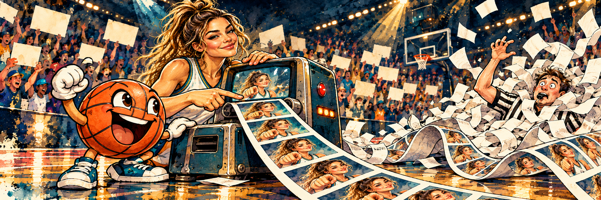
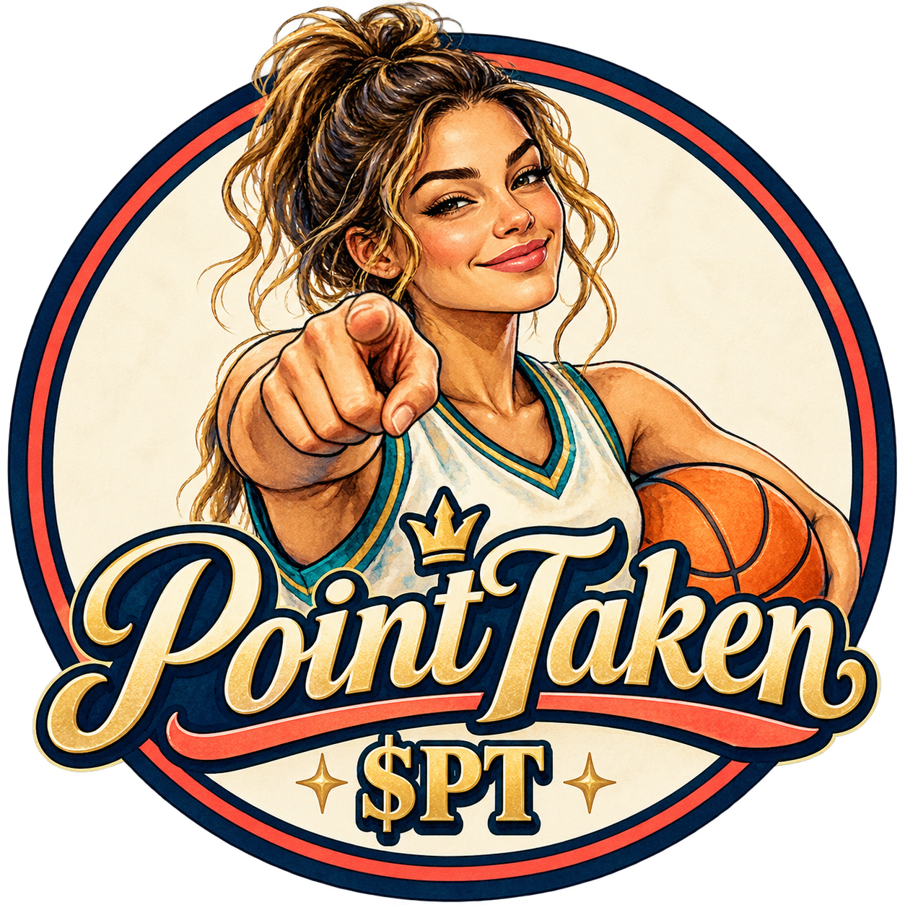
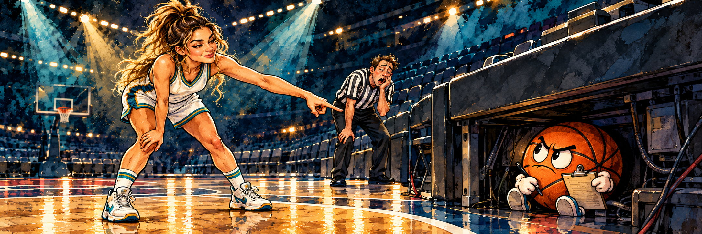

THE POINTER
One sharp finger. A memory like instant replay. No patience for a bad call.


POINTTAKENCOURTSIDE CHRONICLES · $PTOne suspicious bounce. One fearless finger. One basketball with way too much to say. Read the completely unnecessary, wildly over-reviewed origin story.
A hero with a point to make. A ball with a point to prove. A referee who desperately needs a different whistle.
One sharp finger. A memory like instant replay. No patience for a bad call.

A basketball with a whistle, a napkin armband, and the confidence to coach popcorn.

Trying to keep order while fans, snacks and evidence file appeals.
Follow the evidence in order. The Bureau of Calls recommends snacks, a comfortable seat, and no legal advice from Bouncy.
The gym was already loud when the ball rolled beneath the scorer’s table. It was not a dramatic play. No buzzer, no slow-motion spin, no orchestra in the rafters. Just a ball rolling away like it had remembered an appointment.
The referee looked left. The player looked right. Four fans pointed in four directions, including one man who pointed at himself and seemed pleased with the theory.
Then The Pointer raised one finger. Not a speech, not a courtroom objection. One finger and a look that said, “I watched the whole thing, including the part you are about to misremember.”
The scoreboard flickered. A typo appeared where the score should have been: POINT TAKEN.
From under the table came a squeak. The ball had put on a tiny paper necktie. “I’d like to make a statement,” it said. “I was rolling with purpose. Also, I don’t recognize this table as a legal jurisdiction.”
“You’re a basketball,” said the ref.
“And yet I’m the only one here with a clean record.”
The crowd gasped, mostly because the snack line had run out of cheese pretzels. The Pointer kept pointing. The ball kept objecting. Somewhere, the replay-room printer woke up.
By halftime, the ball had vanished. The Pointer found it beneath the bleachers, conducting a serious meeting with a popcorn bucket and two lost mittens.
It introduced itself as Bouncy. It had made a paper armband from a napkin, borrowed a tiny coach’s whistle from a child who was still deciding whether to ask for it back, and appointed itself Assistant Coach for Administrative Vibes.
“I have a play,” Bouncy announced. The whistle made a sound like a duck stepping on a squeaky toy.
“That’s not a play,” said The Pointer.
“It’s a formation. Everyone forms a line and tells me where they last saw my dignity.”
Nobody moved. Bouncy drew a diagram on a popcorn napkin: a circle, three arrows, and itself wearing sunglasses. It named the play The Confused Turnover. The playbook became damp with butter.
The Pointer tried to return Bouncy to the court. Bouncy rolled the other way, claiming the defense had “shifted emotionally.” They made it twelve feet before Bouncy got stuck in a cup holder.
“I’m setting a screen,” Bouncy insisted.
“You’re in a chair.”
“A stationary screen. Very advanced.”
The replay official cued the tape. The screen showed The Pointer pointing. Then The Pointer pointing again. Then The Pointer pointing from a slightly different angle, which Bouncy declared “new evidence, emotionally speaking.”
The replay machine began printing stills. One page. Ten pages. Forty-seven nearly identical pages. The printer became a paper volcano with a very specific subject.
The referee tried to stop it. The button was under a stack of stills. The assistant found the button, pressed it, and the machine printed a page that said STOP BUTTON PRESSED.
“The machine is documenting the investigation,” Bouncy explained, wearing a strip of paper like a championship sash.
The Pointer took the ribbon away. Bouncy accepted this as a ceremonial transfer of authority and gave a speech to a mop bucket.
Fans waved blank signs because all the ink had gone into pictures of the same gesture. A kid held up a pencil sign: “WE GET IT.”
The crowd laughed. The replay froze on The Pointer’s calm, mildly amused face. That was when the gym’s ancient fax machine started printing, too.
By Wednesday, the fans had organized. They called themselves the Bureau of Calls, because “People Who Saw a Thing and Would Like to Discuss It” would not fit on a banner.
The Bureau made three rules: every call needed a witness, every witness needed a snack, and snack disputes went to Bouncy, who had once been trapped in a nacho tray and therefore claimed expertise.
The first hearing concerned a sneeze. Was it a false start? A distraction? A sneeze with intent to deceive? The Bureau reviewed it from six angles. One angle was just a ceiling fan, but the Bureau accepted it because the fan had been present.
The Pointer stood by a diagram. “This is where the sneeze happened.”
“Objection,” said Bouncy. “The diagram is not wearing a tie.”
The ref blew the whistle. It sounded like a duck again. The Bureau voted to adjourn for snacks, then forgot to adjourn and opened a second hearing about who had called the first one.
Somewhere in the confusion, the original ball rolled out from under the scorer’s table. Everyone pointed at once. The Pointer lowered her hand.
“Progress,” she said.
The case seemed settled until Bouncy found a perfectly round nacho chip. It was golden, triangular in the way triangles sometimes are when you are tired, and sitting beside a cup of salsa.
“Basketball,” Bouncy whispered.
“That is a chip,” The Pointer said.
“A snack-sized basketball.”
Bouncy rolled toward it. The chip did not roll. Bouncy bumped it anyway, and the salsa tipped over with the seriousness of a ceremonial bell.
The Bureau sprang into action. A fan produced a clipboard. Another produced a second clipboard to record the first clipboard. The referee asked if anyone had seen the chip move. Nobody had. The chip’s attorney was a napkin.
The Pointer pointed at the salsa. “That is the only thing that moved.”
“The salsa is a witness,” Bouncy said. “It’s just very red under pressure.”
The crowd roared. Cheese landed on the official record. The Bureau declared the nacho a neutral party and gave it a seat at the scorer’s table.
Bouncy apologized to the chip, then immediately asked whether a pretzel could play center.
On the final night, the gym was packed. The replay machine had been unplugged and put in a quiet room with tea. The fax machine was still printing, but now it only printed takeout menus.
The Pointer stepped to center court. Bouncy wore a proper paper armband, a whistle, and a napkin tie upgraded with glitter. The referee carried the ball under one arm and the Bureau’s clipboard under the other.
The last call of the season was simple. A loose ball skipped toward the sideline. Everyone watched it go. No one argued. No one held a hearing. No one asked the ceiling fan for its angle.
The Pointer raised one finger.
Bouncy nodded. “Clean call.”
Then the ball bounced off the referee’s shoe and landed in Bouncy’s lap.
The Bureau immediately reconvened. The kid with the pencil sign became chairperson. The unplugged replay machine printed one last page: a basketball wearing sunglasses.
The whistle chirped. The crowd laughed. Bouncy rolled back to the scorer’s table and left a note: “I was here the whole time. Also under the table for most of the time.”
The Pointer looked into the stands. “Who saw what happened next?”
Every hand went up. Every story was different. The gym filled with friendly arguments, popcorn, and the possibility of another chapter.
That is the PointTaken rule: make the call, share the laugh, and leave room for the crowd to tell it better.
Four numbers on the board. Read them like a player card: the roster size, the fouls, the net, and who holds the whistle.
These are the project’s stated settings. Confirm the official contract and on-chain status before making a decision; the scoreboard is not a substitute for verification.
New to the court? Follow the sequence, check the ball twice, and never hand anyone your locker-room key.
Use an Ethereum-compatible wallet you control. Keep your recovery phrase private and offline.
Have ETH available for the swap and network gas. Leave a little extra for the transaction fee.
Get the contract address from PointTaken’s official channels. Match the Ethereum network and token before proceeding.
Use a reputable Ethereum DEX. Check the token, quote, slippage and total cost before confirming in your wallet.
Four numbers on the board. Read them like a player card: the roster size, the fouls, the net, and who holds the whistle.
These are the project’s stated settings. Confirm the official contract and on-chain status before making a decision; the scoreboard is not a substitute for verification.
New to the court? Follow the sequence, check the ball twice, and never hand anyone your locker-room key.
Use an Ethereum-compatible wallet you control. Keep your recovery phrase private and offline.
Have ETH available for the swap and network gas. Leave a little extra for the transaction fee.
Get the contract address from PointTaken’s official channels. Match the Ethereum network and token before proceeding.
Use a reputable Ethereum DEX. Check the token, quote, slippage and total cost before confirming in your wallet.
Four numbers on the board. Read them like a player card: the roster size, the fouls, the net, and who holds the whistle.
These are the project’s stated settings. Confirm the official contract and on-chain status before making a decision; the scoreboard is not a substitute for verification.
New to the court? Follow the sequence, check the ball twice, and never hand anyone your locker-room key.
Use an Ethereum-compatible wallet you control. Keep your recovery phrase private and offline.
Have ETH available for the swap and network gas. Leave a little extra for the transaction fee.
Get the contract address from PointTaken’s official channels. Match the Ethereum network and token before proceeding.
Use a reputable Ethereum DEX. Check the token, quote, slippage and total cost before confirming in your wallet.
Four numbers on the board. Read them like a player card: the roster size, the fouls, the net, and who holds the whistle.
These are the project’s stated settings. Confirm the official contract and on-chain status before making a decision; the scoreboard is not a substitute for verification.
New to the court? Follow the sequence, check the ball twice, and never hand anyone your locker-room key.
Use an Ethereum-compatible wallet you control. Keep your recovery phrase private and offline.
Have ETH available for the swap and network gas. Leave a little extra for the transaction fee.
Get the contract address from PointTaken’s official channels. Match the Ethereum network and token before proceeding.
Use a reputable Ethereum DEX. Check the token, quote, slippage and total cost before confirming in your wallet.
Asked to clarify, Bouncy clarified that the popcorn bucket was its legal counsel. The bucket has declined comment and is currently covered in butter.
Every witness has a version. The ceiling fan declined to comment, which the Bureau considers suspicious.
The gym is yours. Drop your version of the next call, defend your favorite character, and let the Bureau review it three times.
REWIND TO TIP-OFF ↑